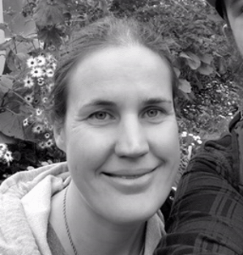

Team Profile
Timothy Hall
- s3851553
- Tim's Webpage

Tim has always had an interest in IT from a very young age and continued to follow this interest by pursuing a role in IT in the Navy. Completing 15 years of service following this interest he has found his passion for IT revolves around networking. Tim has continued to follow his passion by completing his CISCO CCNA qualification and continues to educate himself. With his 15 years of experience in the Navy, Tim brings project and team management skills as well as a raft of IT knowledge to Techstra-One to help see the goals of the company come to life. During his spare time Tim is an amateur home chef and loves to go to the gym and rock climbing with his partner Tiffany.
Andrew Wendt
- s3858515
- Andrew's Webpage

Andrew’s career started out at a data centre, where he administrated the facilities access control and building management systems. He successfully completed a certificate 4 in IT networking and a certificate 3 in electronics, he applied the knowledge he learnt to becoming a technical specialist for an electronic security company. He has worked in the field now for 5 years, the work ranging from fitting off field devices and running cables to programming advance access control systems, IP CCTV, biometrics and intercom systems. One of Andrew’s goals is to further his knowledge with cyber security a career in cyber security is very interesting to him. Andrew brings an array of technical knowledge to Techstra-One, including IT networking, electronics and hardware, Linux based operating systems, SQL database management and cisco routing and switching.
Rebecca Barnett
- s386827
- Rebecca's Webpage 
Rebecca has been interested in Software & Website Development for many years, teaching herself how to code HTML in high school before choosing to commence a Bachelor of Technology degree after graduating. Although her life took a different career path early on - working as a retail manager for fifteen years, Rebecca has always had a passion for technology and is excited to pursue new opportunities in Information Technology, hoping to work as part of a Software Development team in the future. Rebecca brings some project management and Java development experience to Techstra One, which she acquired whilst studying for her Diploma of Information Technology and from a six month industry based scheduling software project.
Adrian Foti
- s3857888
- Adrian's Webpage

Adrian is an enthusiastic, hardworking individual recently obtaining his VCE certificate after completing year 12. Adrian was previously an apprentice Cabinet Maker where he acquired a Cert II in Furniture Making and is now a Building Construction worker looking to further his career. Adrian’s interest in IT began at a young age, experimenting with and tweaking Windows XP machines. Adrian developed a curiosity in how machines worked and how their output could be manipulated. Adrian intends to learn the skills required to be part of a business ICT team and also programming skills that he can utilise in passion projects.
Ben McDonald
- s3851983
- Ben's Webpage

Ben is a student at RMIT studying a Bachelor of Information Technology. Prior to beginning his degree, Ben had pursued a career as an audio visual technician working for companies in Canada and Australia. Working in the AV industry for seven years helped Ben develop his knowledge of networking as well as hardware and software. This led to an interest in IT and AI (Artificial Intelligence) and the possibilities of what AI could hold not only for the AV industry but for every industry.
Adrian Ferrara
- s3856304
- Adrian's Webpage
Adrian's interest in IT stems from a young age when his father brought home the first family PC in 1997. He found himself a natural at navigation and immediately was drawn to the world of video games. In his teenage years he spent a lot of time in music production using programs like FL Studio and Cubase as well as the introduction of the internet where he dabbled in HTML coding unknowingly thanks to MySpace. He is currently enrolled in a Bachelor of Information Technology at RMIT University through OUA. He hopes to find his place in the world of IT by pursuing all aspects and finding a true passion. Adrian is driven to learn as much as possible about all things he takes interest in and has vast experience in retail sales as well as holding a 2nd degree black belt in taekwondo.